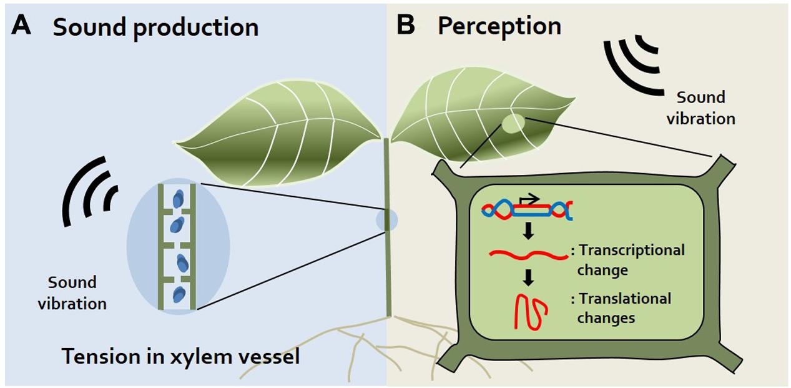
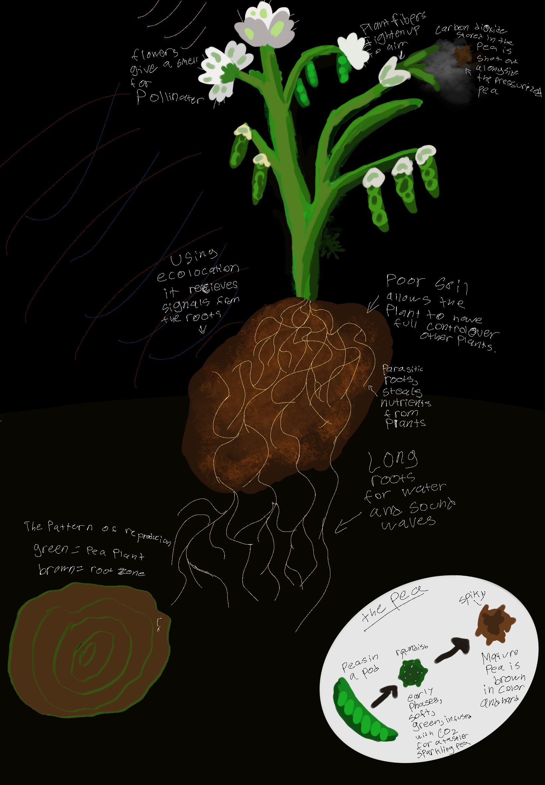

The Surculus Fabam is a genetically modified version of the Pisum Sativum (Pea) by Australian scientists that; were trying to create a pea that; would be protected against attacks from herbivores. The pea was genetically modified by slightly altering the peas protein structure and using carbon dioxide, causing an allergic-type reaction to the lungs of animals and could even affect humans. The Surculus Fabam lives in African savanna soils, it uses photosynthesis to gain nutrients and create energy for itself. The Surculus Fabam is an extension of the genetically modified pea by Australian scientists and evolved further than being able to create; allergic reactions to the lungs of people and animals. According to Stephen Cauchi the evidence that shows this is “Tests by scientists at the John Curtin School of Medical Research in Canberra found that mice who ate the peas developed inflamed lung tissue.” (Cauchi 3). As known by its name, the Surculus Fabam (Shooter of the peas) has a barrel-like gun part of its body. The cause for this is a mutation. With the genetically modified Surculus Fabam that; was created to defend itself against pests, a mutation happened in its DNA. According to Casey Lamkin, “These peas have an insertion of a gene from kidney beans.
Creating a protein that acts as a pesticide. "The difference is that this protein is natural in beans and unnatural in peas.” (Lamkin 1). This insertion of a gene; that is unnatural created a mutation in the Surculus Fabam's DNA, further evolving it from having chemical properties that lure animals away to a physical property that shoots organisms that may harm it. Carbon would also be a great; factor in the evolution of the Surculus Fabam that created its self-defense mechanism. Carbon was used, in the process of genetically modifying a normal; pea into the Surculus Fabam and so it evolved with the use of Carbon as well which is abundant everywhere such as in the air and more. Through the barrel-like piece on the Surculus Fabam pockets, Carbon is stored carbon pockets are explosive in that they shoot out their pea pods in such a way that it is a bullet-like attack. But how do they sense enemies or even know at all where to shoot? They’ve evolved with their roots being able to sense vibrations in the ground, similar to echolocation. These vibrations that get sent are like signals to roots that create the pathway to where they can; sense animals and thus would activate the shooting mechanism of the Surculus Fabam. The impact of the pea pods through the explosive Carbon hitting an animal is one thing but, according to many scientists “Employing models of inflammation, we demonstrated in mice that consumption of the modified alpha AI and not the native form predisposed to antigen-specific CD4+ Th2-type inflammation. Furthermore, consumption of the modified alpha AI concurrently with other heterogeneous proteins promoted immunological cross-priming, which; then elicited specific immunoreactivity of these proteins.” (Vanessa E Prescott, Peter M Campbell, Andrew Moore, Joerg Mattes, Marc E Rothenberg, Paul S Foster, T J V Higgins, Simon P Hogan 1). Showing how the allergic reaction that the genetically modified pea has also inflamed the organism it hits, making the Surculus Fabam one of the few plants that attack other organisms for food or protection.
 